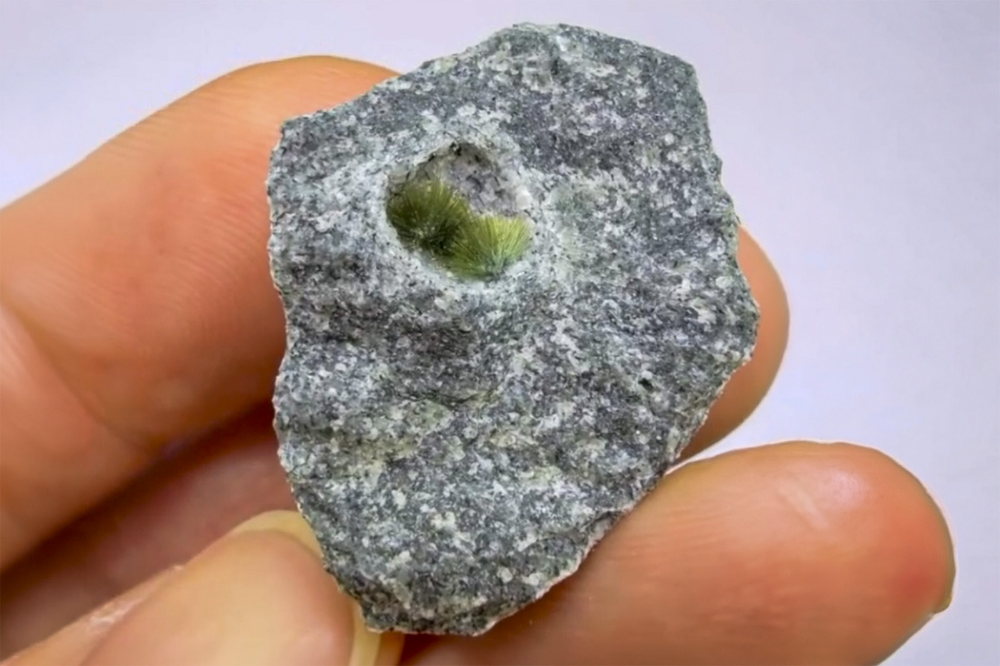

Tuperssuatsiaite
"Tuperssautsiaite Needles TN"
VIII-09723
Aris Quarries, Aris, Windhoek Rural, Khomas Region, Namibia
Purchased 3/7/2026 from Spirifer Minerals for $100.00
Core Collection • In Collection
Details
Storage Type: Flat
Storage Location: 000 Unassigned
Size class: Thumbnail (0)
Dimensions: 2.7 cm
Mass: Unrecorded
Luster: Unrecorded